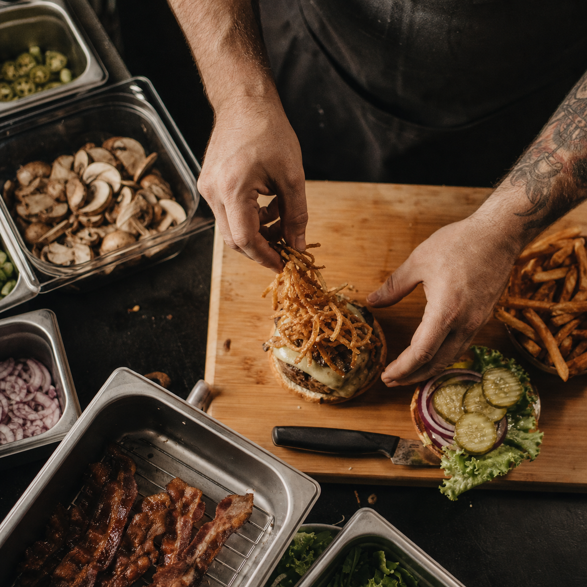
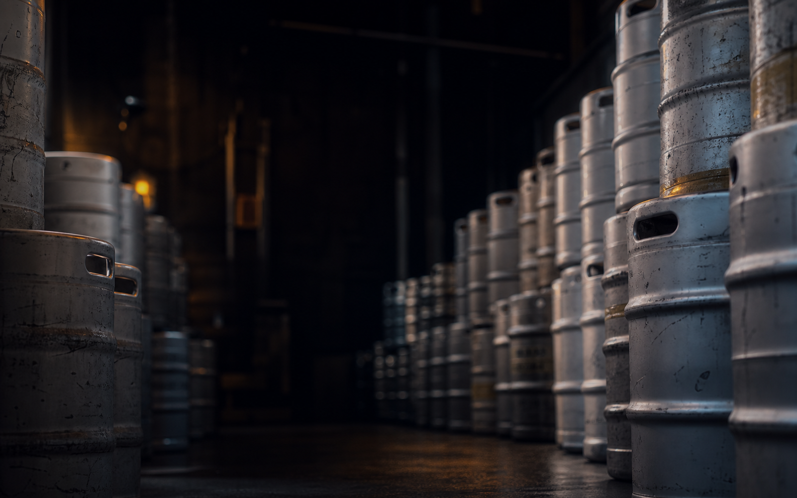
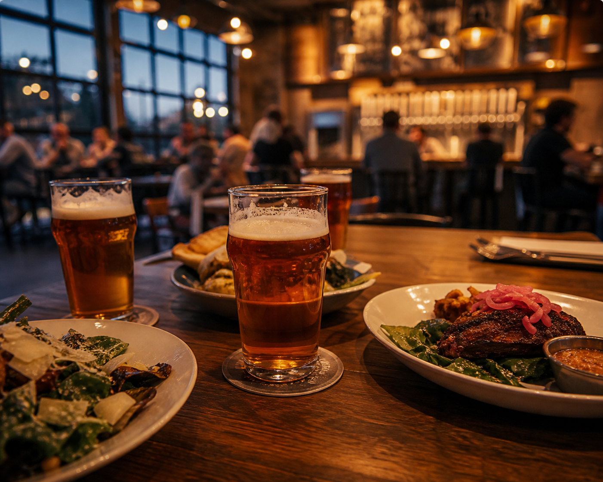
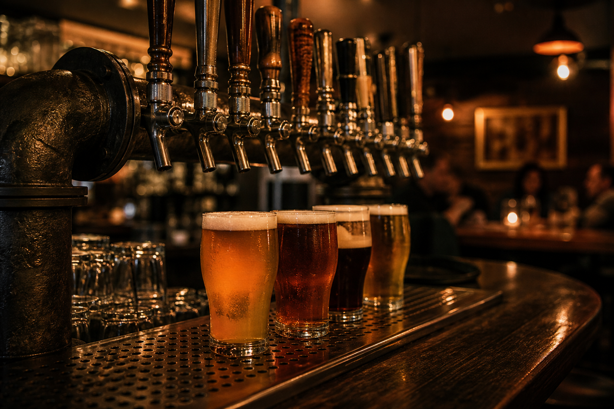

Stop One — 4pm-5pm
10 Barrel Brewing
More than 20 local beers on tap and ten-beer flights. They also serve cocktails, mocktails, and house-made non-alcoholic beer.
Oh, and food.


Tuesday, June 9 4PM-7PM
Boise makes pretty good beer.
Let's get together and have some before the conference kicks off.
Read MoreMore than 20 local beers on tap and ten-beer flights. They also serve cocktails, mocktails, and house-made non-alcoholic beer.
Oh, and food.


Six permanent beers and ten rotating taps. Community-funded beer. Delicious. We'll stop here for dinner.
White Dog is very close. If you want one more beer, head over there instead of hanging out at Boise Brewing.
